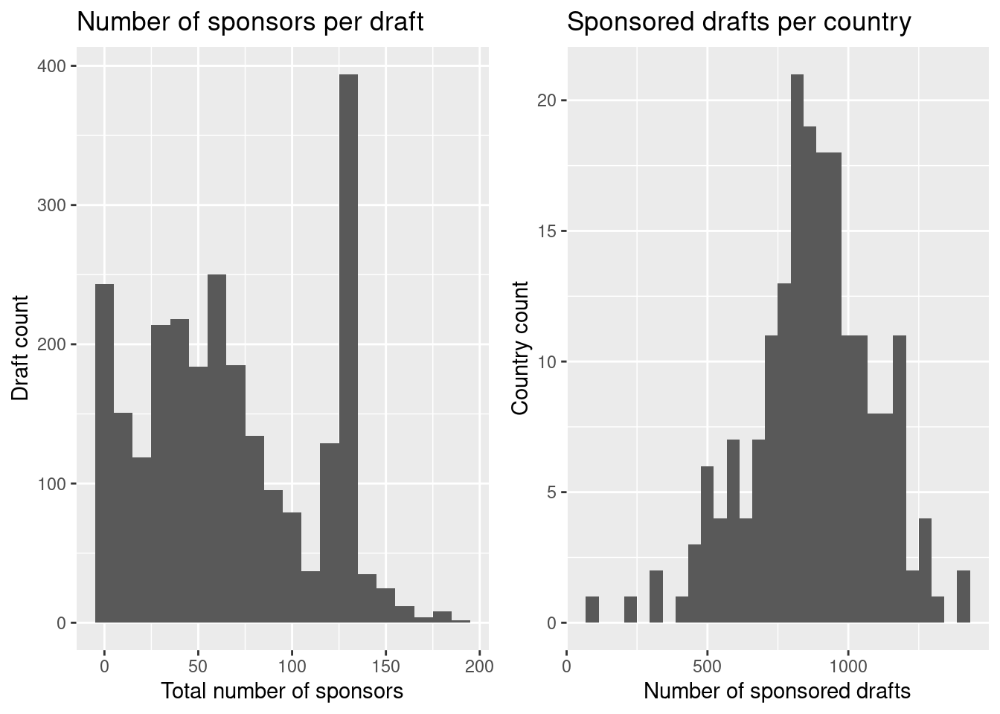

library(ggplot2)
library(ggpubr)
library(dplyr)
library(tidyr)
library(readr)
library(haven)Examples of different types of data visualizations
Visualizations are useful for summarizing information about our different variables and the relationships between them. The type of visualizations that are useful will depend on what kinds of data you have (are your variables continuous or categorical, cross sectional or temporal, etc.?) and on the questions you ask.
On this page, we will show examples of different types graphs often used in political science. Indeed, all the examples are reproductions of figures from recent political science articles published in top journals. The code chunks below show both the ggplot2 code needed to create the visualization and the dplyr and tidyr wrangling code needed to get the data in the right format format for ggplot. Throughout we will thus make use of the following packages:
The examples below are meant to illustrate how to make various forms of frequently used graphs and to show the type of messages you can communicate with the different types of visualizations. Remember that with ggplot2 you are not stuck with any of these graphs or with the aesthetic design that we have chosen here. You may (and should) adapt your visualizations to your own needs!
Bar charts
Bar charts are great for visualizing the count or proportion of observations that belong to different categories on a categorical variable.
For instance, Chen and Xu (2023) collect data on litigation by multinational corporations in Chinese courts. To visualize the amount of litigation from companies from eight important economies they use a bar chart (Chen and Xu 2023, 162), which we can recreate using ggplot2:
load("../data/chen_xu.RData")
dat %>%
1 mutate(across(.cols = c(plahq, defhq, plaregister, defregister), .fns = as.character),
2 country = case_when(plahq == "日本" | defhq == "日本" | plaregister == "日本" | defregister == "日本" ~ "Japan",
plahq == "韩国" | defhq == "韩国" | plaregister == "韩国" | defregister == "韩国" ~ "South Korea",
plahq == "美国" | defhq == "美国" | plaregister == "美国" | defregister == "美国" ~ "USA",
plahq == "德国" | defhq == "德国" | plaregister == "德国" | defregister == "德国" ~ "Germany",
plahq == "法国" | defhq == "法国" | plaregister == "法国" | defregister == "法国" ~ "France",
plahq == "新加坡" | defhq == "新加坡" | plaregister == "新加坡" | defregister == "新加坡" ~ "Singapore",
plahq == "英国" | defhq == "英国" | plaregister == "英国" | defregister == "英国" ~ "UK",
plahq == "澳大利亚" | defhq == "澳大利亚" | plaregister == "澳大利亚" |
defregister == "澳大利亚" ~ "Australia")) %>%
3 drop_na(country) %>%
4 ggplot(aes(x = country))+
5 geom_bar(stat = "count", width = 0.9, fill = "darkgrey", color = "black")+
6 ylab("Number of cases")+
xlab("")+
7 scale_y_continuous(breaks = seq(0, 1400, by = 200), limits = c(0,1600))+
8 theme_classic()+
9 theme(axis.line.x = element_blank(),
axis.ticks.x = element_blank(),
axis.text.x = element_text(angle = 45))+
10 rotate_y_text()- 1
- Their country variable in the bar chart is based on these four variables. They were all coded as “factors” so we recode them to characters.
- 2
-
The dataset is in Chinese, but with great help from the replication materials we can create the country variable using
case_when(). - 3
-
We omit observations that have
NAon thecountryvariable we just created, which just means that they didn’t involve a company from any of the eight countries included in the graph. - 4
-
We start making our graph with
ggplot(). We only need one aesthetic mapping (x). On the y-axis we will have a count of the observations with each value on the x-axis, butgeom_bar()will take care of the counting. - 5
-
We use
geom_bar()to get bars!stat = "count"means that it should count the observations for each value on the x-axis on let this count determine the height of the bars. We adjust the width of the bars, the color inside the bars (usingfill) and the color of the border surrounding each bar (usingcolor) to make it match the design of the original figure (which was not created usingggplot2). - 6
-
Using
ylabandxlabwe can change the axes labels. - 7
-
Using
scale_y_continuous()we can change aspects relating the “scale” on the y-axis. Here we change which values to have ticks and labels for usingbreaksand the length of the y-axis usinglimits. - 8
-
theme_classic()roughly matches the appearance of the original graph which was created in the base R. - 9
- We make some adjustments to the theme to match the original graph: We remove the line and tick marks from the x-axis and tilt change the labels so that they are printed in a 90 degrees angle.
- 10
-
rotate_y_text()from the `ggpubrpackage is useful to rotate the labels on the y-axis to match the original graph by Chen and Xu (2023). But truth to be told: we think the graph would look better if we hadn’t rotated the labels on the y-axis.
You can also use bar charts to show how the amount on one variables vary depending on the value on some categorical variable or combinations of categorical variables. For instance, Carey and Gohdes (2021) make the observation that most journalists are killed in democracies. To illustrate this claim, they count the number of journalists killings that occurred in democracies and the autocracies (using the binary regime classification from Boix, Miller, and Rosato (2013)). They further distinguish between killings known to have been committed by the state and killings with an unknown perpetrator and display the number of killings in each category in a bar chart. Let’s recreate their bar chart:
journalist_killings <- read_csv("../data/journalist_killings.csv")
1journalist_killings %>%
2 filter(major != 1, is.na(bmr_democracy)== FALSE) %>%
3 mutate(regime = ifelse(bmr_democracy == 1, "Democracy", "Autocracy")) %>%
4 group_by(regime) %>%
summarize(state = sum(state),
5 unknown = sum(unknown)) %>%
6 pivot_longer(cols = c(state, unknown),
values_to = "Killings",
names_to = "Perpetrator") %>%
7 ggplot(aes(x = regime,
y = Killings,
fill = Perpetrator)) +
8 geom_bar(position = "dodge",
9 stat = "identity",
10 width = .3,
11 color = "black") +
12 scale_fill_manual(labels = c("state", "unconfirmed"),
values = c("grey", "white"))+
13 xlab("")+
ylab("Journalists killed") +
14 theme(legend.position = "bottom",
panel.background = element_blank(),
panel.border = element_rect(colour = "black", fill=NA),
text = element_text(size=16)) +
15 coord_flip()- 1
-
Some simple wrangling is needed for this figure. We will wrangle the data as needed and supply the wrangled data directly to
ggplot()using pipes (%>%) - 2
- We start by filtering out killings that occurred during major conflicts and observations from countries with missing on the regime variable.
- 3
- We recode the regime variable to get a categorical variable with nice labels for the figure.
- 4
-
We
group_by()the regime variable to summarize the data within each regime type - 5
-
Using
summarize()we count the number of killings by the state and killings with an unknown perpetrator in the dataset - 6
-
In the dataset, there are different columns for killings depending on whether the perpetrator was the state or if the perpetrator was unknown.
ggplot()prefers to have a longer dataset with just one “Killings” variable and additional variable measuring the type of “Perpetrator”. We thuspivot_longer(). - 7
-
Finally, we can start on recreating the graph, using
ggplot(). Notice the we supply bothxandysince we have now already counted theyfor each category onx. Notice also that we usefillto let the colors vary group. Whilecolorwould determine the color of the borders of the bars.filldetermines the color of the area of the bars. - 8
-
We use
geom_bar()to get bars in our graph. We want the bars side by side rather than on top of each other, so we specifyposition = "dodge". - 9
-
We have already counted the number of killings for each category, so we don’t need
ggplotto do that for us. We therefore usestat = "identity. - 10
- Carey and Gohdes (2021)’s bars are slimmer than the default, so we will also adjust their width accordingly.
- 11
-
Here we set
colorto decide the color of the border for each bar.coloris not supplied toaes()so it will not vary by variable. Instead all the bars will get a black border. - 12
-
Using
scale_fill_manual()we can make adjustments to the scale. Here we change the labels and the colors used. - 13
- We change the labels.
- 14
-
We adjust the
theme(). Specifically we remove the background, create black frame around the graph, and change the position of the legend. - 15
- Like Carey and Gohdes (2021), we will flip the graph around so that the x-axis becomes the y-axis and vice versa.
Histograms
The histogram is a type of bar chart that is useful for visualizing the distribution on continuous variables. Values on the continuous variable are binned in into different categories and displayed on the x-axis and the count or share of observations in each category are displayed on the y-axis.
For instance, Seabra and Mesquita (2022) introduces a dataset on the sponsorship of draft resolutions in the United Nations General Assembly. To illustrate their data, they report histograms both of the number of sponsors per draft resolution and of the number of drafts each country has sponsored (Seabra and Mesquita 2022, 7). Let’s replicate both histograms:
drafts <- read_delim("../data/drafts abs 2009-2020 (S64-S74).csv", delim = ",")
drafts <- drafts %>%
1 filter(session>63 & session<74)
2per_draft <- ggplot(drafts,
3 aes(x = n_sponsors_final))+
4 geom_histogram(binwidth = 10)+
5 labs(x = "Total number of sponsors",
y ="Draft count",
title = "Number of sponsors per draft")
6per_country <- drafts %>%
7 pivot_longer(cols = c(29:222),
names_to = "country",
values_to = "sponsorship") %>%
8 mutate(sponsorship = replace_na(sponsorship, 0),
9 sponsorship = ifelse(sponsorship > 0, 1,sponsorship)) %>%
10 group_by(country) %>%
summarize(sponsorships = sum(sponsorship)) %>%
11 ggplot(aes(x = sponsorships))+
12 geom_histogram()+
13 labs(x="Number of sponsored drafts", y="Country count", title="Sponsored drafts per country")
14ggarrange(per_draft, per_country, ncol = 2, nrow = 1)- 1
- The article is based on a smaller subset of General Assembly sessions than are available in their data. We subset to have the same data as in the article.
- 2
-
We start making the first histogram with
ggplot()since we will combine two graphs in this example, we assign the graph to an object (per_draft). - 3
- We just need to supply a mapping for the x-axis
- 4
-
geom_histogram()makes an histogram. We can specify how large each bin on the x variable should be usingbindwidth. - 5
-
We change the labels for the x- and y- axes and add a title using
labs. Seabra and Mesquita (2022) just used the default theme, so we will do the same. - 6
- For the second histogram, we need to wrangle the data so that we have one row per country and a variable measuring how many drafts each country sponsored.
- 7
-
There are a bunch of variables for each country with codes measuring their sponsorship status. We use
pivot_longer()to get one row per country and a variable measuring the sponsorship status for each country on each draft. We use the numbering rather than the names of the columns for selection. - 8
-
The sponsorship variable has
NAwhen countries did not sponsor the draft. We replace with 0s. - 9
- We don’t want to distinguish between types of sponsorship so we replace all codes other than 0 with 1.
- 10
-
We
group_by()country and then usesummarize()to count the number of sponsorships per country. - 11
-
We map the
sponsorshipsvariable to the x-axis usingaes(). - 12
-
For this histogram, we don’t change the
binwidthor thebinsforgeom_histogram(). We then get the default number of bins, which is 30. - 13
-
We add appropriate labels using
labs(). - 14
-
Using
ggarrange()from theggpubrpackage, we can combine different “ggplots” in the same figure. We want them in the same row but in different columns, so we set the number of columns to be 2 and the number of rows to be 1.

Line graphs
We often want to show the development of one or more variables over time. Line graphs are great for this purpose. For instance, Nyrup, Yamagishi, and Bramwell (2023) use the WhoGov data (which we discussed here) to show how the shares of female ministers in democracies and autocracies have developed over time (Nyrup, Yamagishi, and Bramwell 2023, 9). We can recreate the upper panel of their figure, like this:
consolidating_progress <- read_csv("../data/df_consolidatingprogress_V1.csv")
consolidating_progress %>%
1 drop_na(democracy_bmr) %>%
2 mutate(democracy_bmr = ifelse(democracy_bmr == 1, "Democracy", "Autocracy")) %>%
3 group_by(year, democracy_bmr) %>%
4 summarize(percentage_female = mean(share_female, na.rm = TRUE)) %>%
5 ggplot(aes(x = year, y = percentage_female, color = democracy_bmr))+
6 geom_line(size = 1.1)+
7 scale_x_continuous(breaks = seq(1970, 2021, 10)) +
8 scale_y_continuous(breaks = seq(0, 30, by = 10), label = paste(seq(0, 30, by = 10), "%"), limits = c(0,30))+
9 scale_color_manual(values=c("#CB2314","#273046"), guide = FALSE)+
10 annotate("text", x = 2018, y = 29, label = "Democracies",size = 3) +
annotate("text", x = 2019, y = 18, label = "Autocracies",size = 3) +
11 labs(title = "% women in cabinet", x = "", y = "") +
theme_classic()- 1
-
Since we want to group observations by whether they are democracies or autocracies according to Boix, Miller, and Rosato (2013), we drop observations with
NAon this variable. - 2
- We recode the democracy variable to be categorical.
- 3
-
We
group_by()year and democracy variable. - 4
-
Then we use
summarize()to calculate the mean percentage within each group (note that even if the variable is calledshare_femaleit measures percentages, so we don’t need to multiply by 100). - 5
-
It is time to start visualizing using
gpplot(). We need three aesthetic mappings. The x- and y- axes, but also a mapping to distinguish between autocracies and autocracies. We usecolorto get two different lines in different colors. - 6
-
Using
geom_line()we produce our two lines and by increasing thesizewe get lines that are slightly thicker than the default. - 7
-
Using
scale_x_continuous()we can adjust the values shown on the x-axis. - 8
-
Using
scale_y_continuous()we similarly change the values shown on the y-axis. Here we also usepaste()to add a “%” symbol after each value andlimitsto change the default height of the axis. - 9
-
Using
scale_color_manual()we can change the colors used in the plot. Rather than using one of the named colors, Nyrup, Yamagishi, and Bramwell (2023) supplied their preferred colors using hexadecimal notation. Settingguide = FALSEremoves the legend. 10. In place of the legend, we can add text to the plot usingannotate(). We need to supply the coordinates for the text usingxandyand thelabelto be included. - 10
-
Using
labs()we can both change the labels for the x- and y- axes (i.e. instead of usingylab()andxlab()) and add a title on top of the graph. - 11
-
theme_classic()removes the background and grid, producing a graph that looks like the original graph (Nyrup, Yamagishi, and Bramwell 2023, 9).
Smoothed time trends
We have already seen how to create scatter plots and add smoothed curves to illustrate the correlation between two variables. Points and smoothed curves can also be to illustrate developments over time. Such a strategy can help illuminate just what the overall time trend is, but also how much variation there is around the general trend.
For instance, Clark et al. (2023) ask “Are police racially biased in the decision to shoot?” To answer this question (sadly, the answer is “yes”), they collect data on all officer-involved shootings in eight jurisdictions in the United States. To illustrate their data they construct group the data by jurisdiction and month and calculate the natural logarithm of the number of shootings in each jurisdiction-month. They plot this number against the month for each jurisdiction and add a local regression curve to capture potential time trends (Clark et al. 2023, 835). Let’s recreate their graph!
1library(lubridate)
2load("../data/ois_data_for_models.RData")
ois %>%
3 filter(is.na(civilian_race_factor) == FALSE,
4 city_clean != "San Antonio") %>%
5 group_by(month = floor_date(Date, "month"), city_clean) %>%
6 count() %>%
7 ggplot(aes(x = month, y = log(n+1))) +
8 geom_point() +
9 geom_smooth(method = "loess") +
10 facet_wrap(vars(city_clean), as.table = FALSE) +
11 xlab("Month-Year") +
ylab("Number of OIS") +
12 scale_y_continuous(breaks = c(log(1),log(11),log(21),
log(101), log(201),log(401)),
labels = c("0", "10","20", "100", "200","400")) +
13 theme_bw()- 1
-
The
lubridatepackage is useful for worked in dates! - 2
- The dataset is an “events dataset” with one row per officer-related shooting.
- 3
-
Ultimately, they are interested in how racial bias influence the decision to shoot so they omit observations with
NAon the racial identity of the civilian. - 4
- As described in footnote 9 of the paper, they omit San Antonio because there is too little data available from this jurisdiction.
- 5
-
They group their data by month (which they extract from a date variable using
floor_date()fromlubridate) and jurisdiction. - 6
-
Using
count()we can count the number of rows for each group. The resulting variable will by default we be calledn - 7
-
We start making the graph by declaring the aesthetic mapping. We want
monthon the x-axis andlog(n)on the y-axis. This will compress the scale. However, we want to avoid taking the logarithm og zero, so instead we uselog(n+1). - 8
-
We can add points using
geom_point(). - 9
-
And we can add a fitted line or curve to the point using
geom_smooth(). We set the method to beloessto get a local regression. - 10
-
Using
facet_wrap()and selecting the variable capturing the jurisdiction in which the shooting occurred (city_clean), we get one facet per jurisdiction. - 11
-
Using
ylab()andxlab(), we can change the axes labels. - 12
-
We can change aspects relating to the “scale” on the y-axis, using
scale_y_continuous(). Clark et al. (2023) have a logarithmic scale on the axis but labels on the original scale. When setting thebreakswe therefore take the logarithm of the values we want labels and tick marks for. In thelabelsargument we add the labels that should be displayed in the graph. - 13
-
Finally,
theme_bw()is the theme Clark et al. (2023) used.
References
Boix, Carles, Michael Miller, and Sebastian Rosato. 2013. “A Complete Data Set of Political Regimes, 1800–2007.” Comparative Political Studies 46 (12): 1523–54.
Carey, Sabine C, and Anita R Gohdes. 2021. “Understanding Journalist Killings.” The Journal of Politics 83 (4): 1216–28.
Chen, Frederick R, and Jian Xu. 2023. “Partners with Benefits: When Multinational Corporations Succeed in Authoritarian Courts.” International Organization 77 (1): 144–78.
Clark, Tom S, Elisha Cohen, Adam N Glynn, Michael Leo Owens, Anna Gunderson, and Kaylyn Jackson Schiff. 2023. “Are Police Racially Biased in the Decision to Shoot?” The Journal of Politics 85 (3): 000–000.
Nyrup, Jacob, Hikaru Yamagishi, and Stuart Bramwell. 2023. “Consolidating Progress: The Selection of Female Ministers in Autocracies and Democracies.” American Political Science Review, 1–20.
Seabra, Pedro, and Rafael Mesquita. 2022. “Beyond Roll-Call Voting: Sponsorship Dynamics at the UN General Assembly.” International Studies Quarterly 66 (2): sqac008.